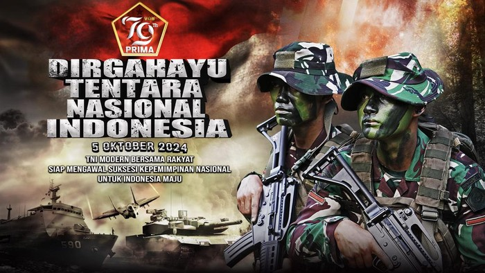

TNI INDONESIA
Tentara Nasional Indonesia adalah nama untuk angkatan bersenjata dari negara Indonesia. Pada awal dibentuk, lembaga ini bernama Tentara Keamanan Rakyat, lalu TKR dibubarkan dan kemudian berdirilah Tentara Republik Indonesia, dan berganti nama menjadi Angkatan Bersenjata Republik Indonesia
| Aspek | Deskripsi |
|---|---|
| visi | “Terwujudnya TNI yang Profesional, Modern dan Tangguh untuk Mewujudkan Indonesia Maju yang Berdaulat, Mandiri, dan Berkepribadian, Berlandaskan Gotong-Royong”.. |
| misi | Sebagai upaya untuk mewujudkan visi TNI tersebut, maka ditetapkan misi TNI sebagai berikut: 1 Memelihara dan memantapkan profesionalisme TNI sebagai alat pertahanan negara; 2 Meningkatkan kemampuan yang responsif dalam menghadapi perkembangan lingkungan strategis; 3 Memantapkan kemampuan TNI yang integratif serta bersinergi dengan kepolisian kementerian dan lembaga dan komponen bangsa lainnya; 4 Mewujudkan percepatan modernisasi alutsista sesuai perkembangan ilmu pengetahuan dan teknologi; dan 5 Mewujudkan TNI yang adaptif terhadap tuntunan tugas dan spektrum ancaman. |
| sejarah | TNI merupakan perkembangan organisasi yang berawal dari Badan Keamanan Rakyat (BKR). Selanjutnya pada tanggal 5 Oktober 1945 menjadi Tentara Keamanan Rakyat (TKR), dan untuk memperbaiki susunan yang sesuai dengan dasar militer international, dirubah menjadi Tentara Republik Indonesia (TRI).. |